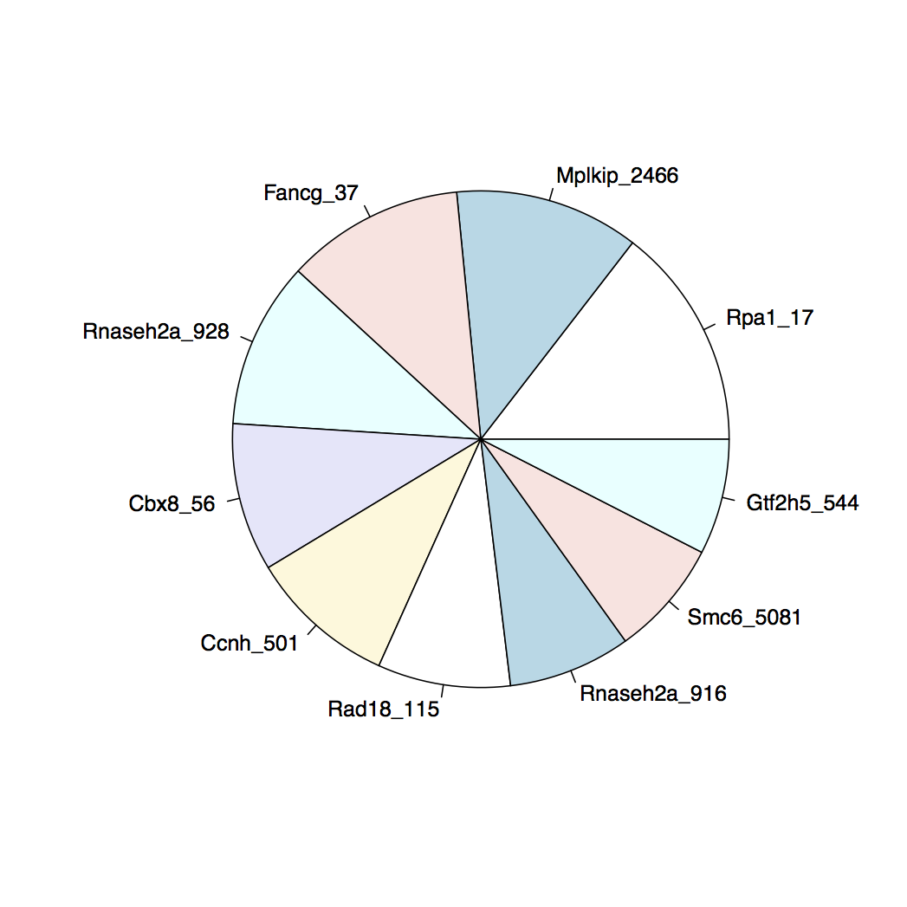

Please READ/LISTEN CAREFULLY to the following.
First check that the data for the Labs has been loaded correctly. Do the following:
$ md5sum /share/data/compgen2016/day45_Intro2Seq_VarCalling/genomes/H.Sapiens/b37_hl/b37_hl.dictand you should see:
bc303533c68cf74b6f2c705f3d86398c /share/data/compgen2016/ /b37_hl.dictwhere I have dropped part of the long path for clarity.
Now this directory:
/share/data/compgen2016/day45_Intro2Seq_VarCallingis both long and also going to be used over and over again. There are many ways of dealing with this in UNIX. We are going to create a config.sh script that will store and name this and other paths for easy refernce and quick loading.
In you home directory (/home/guest) create a Day45 sub-directory and then two more sub-sub directories: code, results
You can do this most simply by:
$ cd # This takes you home
$ mkdir Day45
$ mkdir Day45/code
$ mkdir Day45/results
$ cd Day45/codeYou should now be in the code subdirectory (check with pwd). Now create/edit a file called config.sh and in it put:
# Compgen2016 Day 4,5 configuration file
# Path to root of lab data directories
ROOT45=/share/data/compgen2016/day45_Intro2Seq_VarCallingOnce you have this file you want to source it so those variable will be set in your current shell environment. Do the following:
$ source ~/Day45/code/config.shand to make sure everthing is working redo the checksum but this time use the $ROOT45 variable:
$ md5sum $ROOT45/genomes/H.Sapiens/b37_hl/b37_hl.dict
bc303533c68cf74b6f2c705f3d86398c /share/data/compgen2016/...While most next generation sequencing analysis pipelines require the data to be mapped to a target genome there are some pipelines that can be done without any alignment step. One such problem is the analysis of pooled shRNA experiments such as in Zuber, et. al, 2011[^Zuber2011]
In this experiment a library of hairpins is introduced into a population of cells and depending on which hairpin gets incorporated that particular cell my grow or die. By sequencing using primers specific to the hairpin constructs you can determine which shRNA lead to proliferation and survival or arrest.
A typical shRNA construct will look as follows;
For this exercise we will focus on a core region that contains the following sequence elements:

The shRNA sequence goes from position 1 to 22. There is an index sequence that for this example is fixed and is from position 23 to 28 and then an adapter sequence.
Given a FASTQ file of sequences we want to count the abundance of the shRNA sequences in it. shRNA's with higher abundances may indicate that the gene targeted by them is potentially responsible for limiting cell proliferation (i.e., repressing it activates growth)
The basic outline of the pipeline is as follows
Quality Trim to make sure we have high enough Q's at the adapter region. We will trim to a high Q (Q>30) and since we will be using it in a subsequent step we want to make sure we do not trim away the INDEX sequence so set a minimum length after trimming to retain it.
Convert from FASTQ to FASTA
Clip Index Sequence, discard sequences without an adapter (quality control) in them or shorter than the length of the shRNA piece.
Collapse multiple occurrences of the same sequence and get the counts
Re-format the FASTQ file into a tabular format
Join/annotate shRNA sequences.
The first 5 steps of this pipeline can be done either with programs from the FASTX tool kit or with a custom script/program. The last step will require some programming, but should be doable in R, python or perl and should be simple in any programming langage with decent I/O and string capabilities.
The input for this pipeline is at:
$ROOT45/Labs/1_Sequencing/data/shRNA_Experiment1.fastq.gzwhere $ROOT45 is the path we set in the Preliminaries section. If this is not setup correctly ask for help.
You can find a manual for all the FASTX commands either online at:
or there is a local copy in the course repository at
$ROOT45/Labs/man/FASTX/fastxMan.html
which you should be able to open in any browser.
If you are not yet comfortable with the UNIX command line and programming then I suggest skipping to the next section: Pipeline Walkthrough. In that next section I will step through building this pipeline from the FASTX toolkit programs.
However, for people already comfortable with the command line and programming I strongly suggest trying to figure out how to code the pipeline from the description above. Find where the FASTX tool kit is installed in your system with
which fastq_to_fastaif you see nothing then it is not on your path and you will need to find it and add it to your path.
Then browse the commands available and there features by either ls-ing that directory and running the commands with the -h option:
fastq_to_fasta -hor use the manual pages linked above and try to build the pipeline. Although you can get something built in less than steps you should use 5 different commands from the toolkit.
If you run into a snag then just move to the next section. If you do complete the pipeline skip to Final Steps.
Although it is usually a really bad idea to do pipelines as command line one liners; for pedagogical reasons we will do exactly that here. The input file is small enough that repeated re-running should not be an issue. However if you feel more comfortable encapsulating the commands in a script then please do so. Make sure if you are going to go the one liner route you understand how to use the command history; in particular how to repeat previous commands. Make sure either CTRL-P or up-arrow work as expected.
First make sure the FASTX toolkit is on your path. You can do this typing:
fastq_to_fasta -hyou should see something like
usage: fastq_to_fasta [-h] [-r] [-n] [-v] [-z] [-i INFILE] [-o OUTFILE]
Part of FASTX Toolkit 0.0.13.2 by A. Gordon (gordon@cshl.edu)
[-h] = This helpful help screen.
[-r] = Rename sequence identifiers to numbers.
[-n] = keep sequences with unknown (N) nucleotides.
Default is to discard such sequences.... (your version number may be different)
If not or you get an error ask for help. Now check that you can re-run this command using one of the history re-run command methods:
Up-arrow
CTRL-p
In fact re-run that command and then reselect it and edit it to run:
fastx_renamer -hif you new to unix and are having trouble with this ask for help.
The walk through is going to be using UNIX pipes to chain together the various commands. If this is too complex or confusing or you want to capture the intermediates you can use I/O redirection
COMMAND <INPUT >OUTPUTor if you look at the help screen you will see that most the FASTX commands allow you to specific the input and output file with:
[-i INFILE] = FASTA/Q input file. default is STDIN.
[-o OUTFILE] = FASTA/Q output file. default is STDOUT.ie, they default to standard input and standard output but you can explicitly set the input and output files or just one or the other.
First step is to find the input file: shRNA_Experiment1.fastq.gz. If the course files were installed in your home directory then it should be here:
$HOME/Intro2NextGen/1_Sequencing/data/shRNA_Experiment1.fastq.gzverify that is is there by doing the following:
file $HOME/Intro2NextGen/1_Sequencing/data/shRNA_Experiment1.fastq.gz and you should see something like
.../Intro2NextGen/1_Sequencing/data/shRNA_Experiment1.fastq.gz: gzip compressed data, from Unix, last modified: Thu Oct 15 18:09:05 2015, max compressionif you get an error (No such file or directory) ask; there should be a live update as to where these files are. If you are feeling adventurous you can look for it with
find $HOME | fgrep shRNA_Experiment1.fastq.gzOnce you are sure you have the file code the first step of the pipeline. Note; that files ends with a .gz extension. That means the file is compressed (to save space). DNA sequence data is highly redundant and actually compresses quite well. However even compressed the files are usually huge so almost always you will be dealing with compressed files.
You could uncompress it but for this exercise since we will be using pipes extensively let's just take a look at the top of the file with
zcat $HOME/Intro2NextGen/1_Sequencing/data/shRNA_Experiment1.fastq.gz | headzcat is like cat but decompress first (most systems also have zmore) and head just gives the first 10 or so lines. You should see:
@COMPGEN:Set1:201510:4:1105:16154:58520 1:N:0:
TCCAATCTTTTCAGAGTCTGAATACATCTGTGGCTTCACTACCAGATCGT
+
BBBFFFFFHHHHHJIJDGHJJIJIJJGIHBEFHFHIIGIEHGIICGFGHD
@COMPGEN:Set1:201510:4:1105:16052:58552 1:Y:0:
CCCTAGTGAATATTTATTATGAAACATCTGTGGCTTCACTACCAGAACGC
+
==>;AA+2AA@=><=@7,?>>=,@3?+<<+@++2AB;@@@A7A>B#####
@COMPGEN:Set1:201510:4:1105:16106:58578 1:Y:0:
ACCATAGCATATATCAATGTAATACATCTGTGGCTTCACTACCAGATCGTNote strictly necessary but it is often a good idea to quality trim the data. Trimming means remove bases from the sequence that have a Q value below a given threshold, starting from the 3' end and moving to the 5' end. Once you hit a pass that passes the threshold you stop and even if there are low Q bases to the 5' end of this one the trimming ends here. So the first step is to use the trimmer. You are going to use the following command
fastq_quality_trimmer -hTake a look at the options and see if you can guess what you will need. We want to trim to baseQ 30 and discard sequences that are shorter then 28 because those will not longer have intact INDEX sequences (see figure above). Try to work out the options but here is the command you want:
zcat $HOME/Intro2NextGen/1_Sequencing/data/shRNA_Experiment1.fastq.gz | fastq_quality_trimmer -t 30 -l 28 -Q33 -v | headThat command is so long it is not readable so here are two very, very, useful UNIX features. One variables. You can set the name of that file as a variable and use that instead:
INPUT=$HOME/Intro2NextGen/1_Sequencing/data/shRNA_Experiment1.fastq.gzNow you can say:
zcat $INPUT | fastq_quality_trimmer -t 30 -l 28 -Q33 -v | headand you should see:
@COMPGEN:Set1:201510:4:1105:16154:58520 1:N:0:
TCCAATCTTTTCAGAGTCTGAATACATCTGTGGCTTCACTACCAGATCGT
+
BBBFFFFFHHHHHJIJDGHJJIJIJJGIHBEFHFHIIGIEHGIICGFGHD
@COMPGEN:Set1:201510:4:1105:16052:58552 1:Y:0:
CCCTAGTGAATATTTATTATGAAACATCTGTGGCTTCACTACCAG
+
==>;AA+2AA@=><=@7,?>>=,@3?+<<+@++2AB;@@@A7A>B
@COMPGEN:Set1:201510:4:1105:16106:58578 1:Y:0:
ACCATAGCATATATCAATGTAATACATCTGTGGCTTCACTACCAGATCGN.B. the second sequence was trimmed.
What do the options means? You should look at the help screen and convince yourself they are what we want. But why -v; what is verbose? It just prints some statistics how many sequences were discard because they were two short after trimming. That info goes to standard error if your are worried about it messing up the pipeline. If you want to see it do:
zcat $INPUT | fastq_quality_trimmer -t 30 -l 28 -Q33 -v >/dev/nulland you should see:
Minimum Quality Threshold: 30
Minimum Length: 28
Input: 100000 reads.
Output: 99078 reads.
discarded 922 (0%) too-short reads.But what is that -Q33 thing. You are not missing it; it is not in the help description. Leave it off and see what happens:
fastq_quality_trimmer: Invalid quality score value
(char '+' ord 43 quality value -21) on line 8A little special easter egg from the FASTX people. FASTX is fairly old toolkit written in the days when Illumina decided to use their own conventions for encoding quality scores in this case PHRED+64. FASTX defaults to that. However, Illumina finally moved to the standard convention that everyone uses now and all current data is encoded in the PHRED+33 scale. So -Q33 tells the program that.
If you still confused about this issue check out the wiki page: https://en.wikipedia.org/wiki/FASTQ_format
We are done with the qualities so we can convert from to FASTA format now and then trim out the adapter. The two programs to do this are
fastq_to_fasta
fastx_clipperAnd here is the pipeline up to this point:
zcat $INPUT | fastq_quality_trimmer -t 30 -l 28 -Q33 -v | fastq_to_fasta -Q33 -v | fastx_clipper -a TACATC -c -l 22 | headAgain the line is unreadable long so we use another unix convention:
zcat $INPUT | fastq_quality_trimmer -t 30 -l 28 -Q33 -v \
| fastq_to_fasta -Q33 -v \
| fastx_clipper -a TACATC -c -l 22 \
| headIf you end a line with a backslash (\) and immediately type return then you do not execute the command but rather the shell starts a new line and lets you continue typing. You must not have a space after the backslash.
If everything worked you should see:
>COMPGEN:Set1:201510:4:1105:16154:58520 1:N:0:
TCCAATCTTTTCAGAGTCTGAA
>COMPGEN:Set1:201510:4:1105:16052:58552 1:Y:0:
CCCTAGTGAATATTTATTATGA
>COMPGEN:Set1:201510:4:1105:16106:58578 1:Y:0:
ACCATAGCATATATCAATGTAA
>COMPGEN:Set1:201510:4:1105:16098:58591 1:N:0:
CACTAAGTAAATGTTTAATCAA
>COMPGEN:Set1:201510:4:1105:16162:58613 1:N:0:
TCATTTCCATTTTACAAGATAAWhile this pipeline will be done with pipes as I said it can also be done with saving intermediate files. Here are two versions of the previous piece but this time saving intermediate results to a file.
With file redirection
zcat $INPUT > step0.out
fastq_quality_trimmer -t 30 -l 28 -Q33 -v <step0.out >step1.out
fastq_to_fasta -Q33 -v <step1.out >step2.out
fastx_clipper -a TACATC -c -l 22 <step2.out >step3.out
head step3.outThe fastx tools also permit another option; use their command line input/output options
zcat $INPUT > step0.out
fastq_quality_trimmer -t 30 -l 28 -Q33 -v -i step0.out -o step1.out
fastq_to_fasta -Q33 -v -i step1.out -o step2.out
fastx_clipper -a TACATC -c -l 22 -i step2.out -o step3.out
head step3.outYou may ask why do zcat and write a separate file instead of gunzip and decompress the $INPUT. This is not a hard rule; but I have a strong preference not to modify original/raw input files in anyway. In fact at MSKCC the sequence archive were all sequence data is stored is READ-ONLY; to prevent anyone from accidentally or intentially modify any of the raw data. Using gunzip would modify the original input file (which where I work is not even possible).
The steps up to this point are actually fairly common in many sequence processing pipeline (except for the conversion from FASTQ to FASTA) and at this point we have trimmed/clipped sequences which in most situation we would now mapped to the appropriate genome. However in this case mapping is unnecessary. The sequences are from a designed screen so we know what they are (and what genes they target) already based on just the sequence. What we want to know is from the starting pool for roughly equally proportioned hairpins which ones were enriched and which were depleted. Simply we want to count them and there is a tool to do that: fastx_collapser. Although not obvious from its name fastx_collapser will collapse multiple copies of the same sequence and will also give you the counts of how many times that copied was in the file.
Add this step the pipeline with:
zcat $INPUT | fastq_quality_trimmer -t 30 -l 28 -Q33 -v \
| fastq_to_fasta -Q33 -v \
| fastx_clipper -a TACATC -c -l 22 \
| fastx_collapser \
| headand you should see:
>1-1222
CCTAGTGAATATTTATTATGAA
>2-1011
CACTAAGTAAATGTTTAATCAA
>3-976
GAAGGATAAATTAGTAACTTAA
>4-911
TACATACATAAATCATTCTTTA
>5-812
TCTAATAGAAAATAGAACTCTAWere the numbers in the FASTA description line indicate the rank of the sequences counts and the raw count itself; i.e., there were 1,222 copies of the first sequence.
Technically we are now done, we have the counts, but that is not the more useable of formats. In almost all pipelines the minimal, raw output is often not the most workable so there will often be a number of post-processing steps. One last one using the FASTX tools kit is to convert the FASTA file to a table.
zcat $INPUT | fastq_quality_trimmer -t 30 -l 28 -Q33 -v \
| fastq_to_fasta -Q33 -v \
| fastx_clipper -a TACATC -c -l 22 \
| fastx_collapser \
| fasta_formatter -t \
> countsTable.txtThis is the end of this stage of the pipeline so we write the file to save it for later use. To see what is in there use the head command: head countsTable.txt
1-1222 CCTAGTGAATATTTATTATGAA
2-1011 CACTAAGTAAATGTTTAATCAA
3-976 GAAGGATAAATTAGTAACTTAA
4-911 TACATACATAAATCATTCTTTA
5-812 TCTAATAGAAAATAGAACTCTA
6-809 TACTACTTATACAACAACTTAA
7-727 TTGCATATTCATTGATAAATAA
8-671 CTACAGTGTACTTACATACATA
9-637 GAGAATGTATTCTTAGAATACA
10-633 TTAAGTGTTATTTGTTATTAAANot the most greatest format but a least is a much more easily parseable table.
While the sequences identify the shRNA uniquely a much nicer table for humans would look like this:
| Counts | Sequence | GeneTarget |
|---|---|---|
| 1222 | CCTAGTGAATATTTATTATGAA | Rpa1_17 |
| 1011 | CACTAAGTAAATGTTTAATCAA | Mplkip_2466 |
| 976 | GAAGGATAAATTAGTAACTTAA | Fancg_37 |
| 911 | TACATACATAAATCATTCTTTA | Rnaseh2a_928 |
Where the identity of the sequences is stored in the file shRNA_Library.fasta which is in the same directory as the input FASTQ file.
There is no way to do this with the FASTX toolkit. It could be done with a crazy awk or perl one liner. But at this point it is best to write a real program. And since it is likely we are going to be some some sort of statistical analysis on this data it might be best to do this last step in R but if you do not like working with strings in R you could write a short python or perl (or whatever) script that takes the table from the pipeline and the library file and output this file
However to tie things together and to complete this get the table and gene names into R and make a pie chart of the top 10 shRNA's.

The FASTX toolkit is very useful but it is very old and not longer actively maintained. In particular the clipper (fastx_clipper) has some very odd behavior and also does not work with PairEnd data; it also is not deterministic (ie you get different answer). From the author himself:
The fastx-clipper was designed to work with short reads (e.g 36nt or 50nt), and be very-sensitive (and somewhat less specific) - it will not perform well with longer reads. I'd recommend trying other clipping programs (e.g. "cutadapt")
You definitely want to use a more modern adapter. Some alternatives are:
cutadapt
TrimGalore (wrapper around cutadapt with defaults)
So if there is time try the following exercise
Rewrite the above pipeline to not use fastx_clipper. Ask if you need a hint but think about it first.
Find and install an alternative adapter clipper
You can use the following dataset which is miRNA sequenced to 50bp so every sequence has the adapter in it. This is the Illumina SmallRNA adapter sequence.
>smallRNA 3' Adapter
tggaattctcgggtgccaaggaactccagtcaca
and you can find the miRNA data at:
$ROOT/Intro2NextGen/1_Sequencing/data/miRNA_Dataset.fastq.gzOr if you just want to practice more with FASTX use it to clip this data set which is what fasts was optimized for.
Use the pipeline above (or your own program) to count miRNA sequences; N.B. miRNA are not all the same length so the pipeline I did above will work with miRNA but if you did a short cut pipeline that just extracted the shRNA sequence directly instead of clipping it will not work for miRNA.